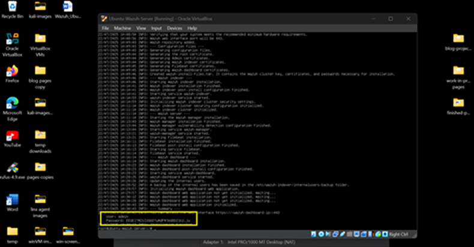
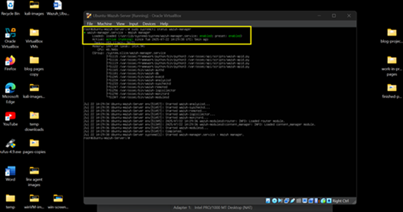
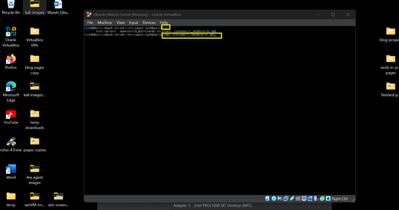
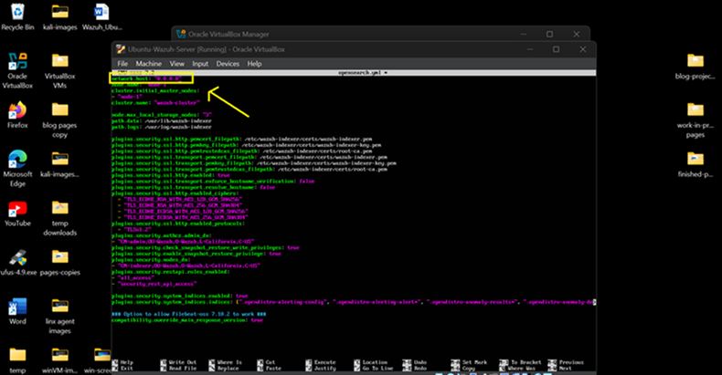
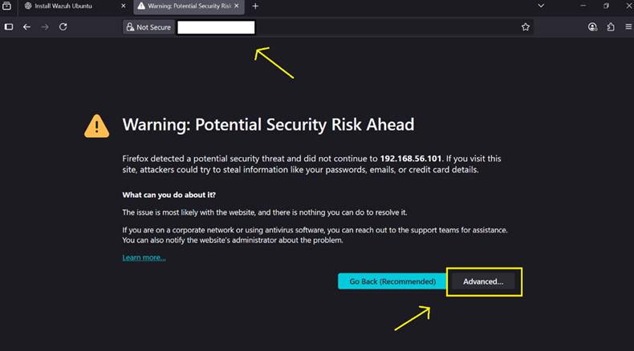
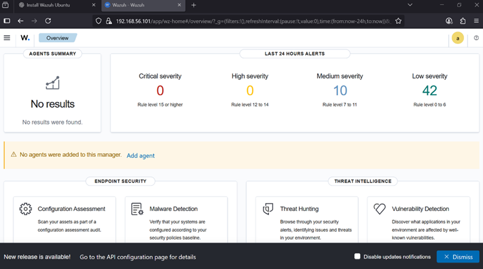

Overview
Wazuh is an open-source Security Information and Event Management (SIEM) platform used for log collection, threat detection, file integrity monitoring, vulnerability assessment, and security analytics.
In this environment, Wazuh serves as the centralized monitoring platform responsible for collecting telemetry from Windows and Linux endpoints.
Step 1 — Install Wazuh Components
- Start the Ubuntu-Wazuh-Server virtual machine.
- Log in using your administrative account.
- Update the operating system and download the installation script.
- Run the automated deployment installer.
sudo apt update && sudo apt upgrade -y
sudo apt install curl apt-transport-https \
lsb-release gnupg -y
curl -sO https://packages.wazuh.com/4.8/wazuh-install.sh
chmod +x wazuh-install.sh
sudo ./wazuh-install.sh -a
Installation typically takes 10–15 minutes depending on system resources.
IMPORTANT: Save the generated administrator credentials displayed during installation.

Step 2 — Verify Wazuh Services
Confirm all Wazuh components are running correctly.
sudo systemctl status wazuh-manager
sudo systemctl status wazuh-indexer
sudo systemctl status filebeat
sudo systemctl status wazuh-dashboard
Verify each service displays an active (running) status.

Step 3 — Configure Dashboard Access
- Determine the Ubuntu server IP address.
- Open the Wazuh Dashboard configuration file.
ip a
sudo su
cd /etc/wazuh-dashboard
nano opensearch_dashboards.yml
Update the dashboard configuration if necessary and verify the correct server IP address is being used.

Step 4 — Configure Wazuh Indexer
- Open the indexer configuration file.
- Verify network accessibility settings.
cd /etc/wazuh-indexer
nano opensearch.yml
If remote access is required, configure:
network.host: 0.0.0.0
Save the configuration and restart services if modifications are made.

Step 5 — Access the Wazuh Dashboard
- Open a browser from the Windows or Kali Linux endpoint.
- Navigate to the Wazuh web interface.
https://<WAZUH-SERVER-IP>
- Accept the certificate warning.
- Log in using the administrator credentials generated during installation.


Install Complete
Wazuh SIEM is now operational and accessible through the web dashboard. The next phase is deploying Wazuh agents on Windows and Linux endpoints.